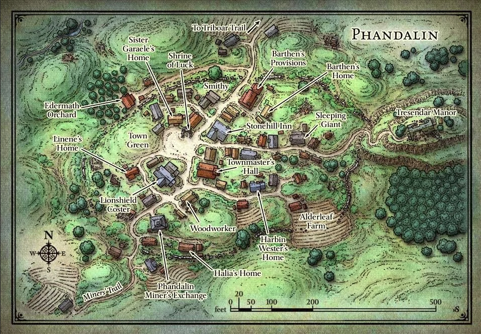

<iframe src="https://albumizr.com/a/iDwz" scrolling="no" frameborder="0" allowfullscreen width="700" height="400">


<map name="image-map">
    <area target="" alt="L’Auberge de Rochecolline" title="L’Auberge de Rochecolline" href="https://www.notion.so/Le-village-et-ses-habitants-483b1f7b74e24a9ab9a0a7f54a445817?pvs=4#a4d1b6698e224f57856445f6c409fe35" coords="430,238,399,270,422,286,447,282,464,258,445,244" shape="poly">
    <area target="" alt="Les provisions de Barthen" title="Les provisions de Barthen" href="https://www.notion.so/Le-village-et-ses-habitants-483b1f7b74e24a9ab9a0a7f54a445817?pvs=4#a442d50d1ea8477da0b930734cc6d90d" coords="498,156,467,197,483,220,499,224,515,210,532,192,543,171,522,159" shape="poly">
    <area target="" alt="Le verger d’Edermath" title="Le verger d’Edermath" href="https://www.notion.so/Le-village-et-ses-habitants-483b1f7b74e24a9ab9a0a7f54a445817?pvs=4#7e769b4c9dcf4079a9c477c4eab1e8ab" coords="199,128,174,155,161,198,163,220,191,240,208,250,238,250,265,225,288,199,287,183,257,166,253,147,256,135,231,128,215,137" shape="poly">
    <area target="" alt="Les Marchandises du Bouclier au Lion" title="Les Marchandises du Bouclier au Lion" href="https://www.notion.so/Le-village-et-ses-habitants-483b1f7b74e24a9ab9a0a7f54a445817?pvs=4#4abd42d40f124e0783799cb587952e91" coords="317,380,340,383,353,376,363,362,361,343,366,325,338,317,319,312,305,323,293,342,292,354,300,368" shape="poly">
    <area target="" alt="Le Change des Mineurs de Phandaline" title="Le Change des Mineurs de Phandaline" href="https://www.notion.so/Le-village-et-ses-habitants-483b1f7b74e24a9ab9a0a7f54a445817?pvs=4#5d6365c20d0e4bc68adb6b53987f37e8" coords="338,454,341,440,337,424,323,420,303,418,285,429,278,449,288,459,306,468,321,466" shape="poly">
    <area target="" alt="La ferme Feuille d’Aulne" title="La ferme Feuille d’Aulne" href="https://www.notion.so/Le-village-et-ses-habitants-483b1f7b74e24a9ab9a0a7f54a445817?pvs=4#8b1a57a50be34fab8533f56709ad0cc3" coords="587,387,565,397,564,421,573,451,579,478,585,491,603,496,628,495,656,487,687,480,699,461,700,440,692,418,673,405,662,398,635,392,616,392,603,388" shape="poly">
    <area target="" alt="Le Sanctuaire de la Chance" title="Le Sanctuaire de la Chance" href="https://www.notion.so/Le-village-et-ses-habitants-483b1f7b74e24a9ab9a0a7f54a445817?pvs=4#a9179b92421e4833bf95b6f6bf29f2cc" coords="332,230,354,221,371,223,389,221,410,242,402,262,390,281,385,304,374,317,352,317,334,309,323,299,326,274,333,254" shape="poly">
    <area target="" alt="Le Géant Endormi" title="Le Géant Endormi" href="https://www.notion.so/Le-village-et-ses-habitants-483b1f7b74e24a9ab9a0a7f54a445817?pvs=4#fd0193ec05e84a71a8576a1ff02d7072" coords="599,242,586,251,576,264,565,280,570,294,588,297,601,294,609,289,616,273,621,260,619,243" shape="poly">
    <area target="" alt="L’hôtel de ville" title="L’hôtel de ville" href="https://www.notion.so/Le-village-et-ses-habitants-483b1f7b74e24a9ab9a0a7f54a445817?pvs=4#8935c99d0a4b460cb44d2038cbd8aa04" coords="391,314,383,324,376,353,387,365,414,366,428,367,443,356,448,342,453,330,426,323,406,318" shape="poly">
    <area target="" alt="Le manoir de Trésendar" title="Le manoir de Trésendar" href="https://www.notion.so/Le-village-et-ses-habitants-483b1f7b74e24a9ab9a0a7f54a445817?pvs=4#ccdd6bb239da4d0cbb0e4ad2793ada9b" coords="806,237,780,245,777,264,779,279,796,284,820,287,857,285,887,272,912,267,921,246,925,231,908,217,880,214,837,216,818,223" shape="poly">
</map>
</iframe>